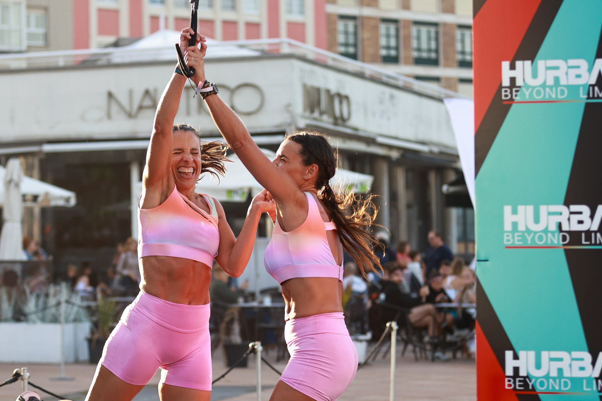
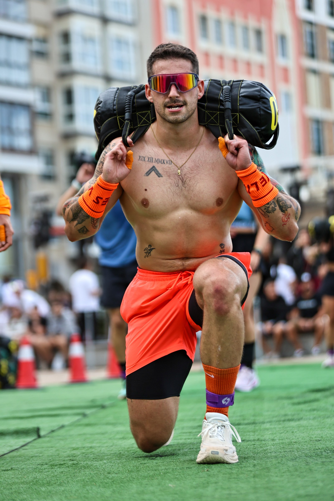

HURBAX turned the Gijón seafront into an open-air hybrid fitness arena on 26 September, bringing more than 1,000 athletes to the Jardines del Náutico and the Paseo del Muro de San Lorenzo.
The format linked five one-kilometre running segments with five functional stations. Rowing, wall balls, sandbag lunges, farmers carries and burpee broad jumps demanded endurance, strength and careful pacing from the opening kilometre to the finish.

Individual effort and collective energy
Competitors took part as individuals, pairs and teams across men’s, women’s and mixed categories. The constant change between running and functional work rewarded athletes who could manage transitions as well as produce raw power.

The Gijón event also formed part of the 2026 HURBAX championship, with the leading athletes in each modality working towards the national final in Madrid on 24 October.
Image Media’s photographers documented the competition from the workout stations and the finish area, following the physical effort and the reactions that shaped the day.
View the HURBAX Gijón photo gallery →
Image Media coverage
Reporting: IM News Editorial Desk
Coverage photographers: Mateus Pereira, Fran Paulino, Sergio Mendes, Eduardo Almeida and Felipe Albano / Image Media
Event date, venue, format and championship information checked against official HURBAX and Gijón sources.